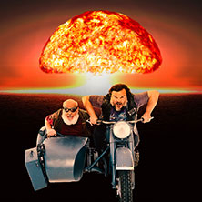

|  |
Richard SorgeThe spy which caused Peal Harbor Richard Sorge has been a spy, of German origin, but comunist, which had worked for Russia in Japan while
gathering information about the Nazist in Japan.
|
| Important dates | |
|---|---|
| Date | Event |
| 04/10/1895 | Birthdate |
| 01/10/1914 | Fighting I World War |
| 07/11/1944 | Death by hanging |
| Drinking | ⭐ ⭐ ⭐ ⭐ |
| Spy | ⭐ ⭐ ⭐ ⭐ ⭐ |
| Japanese | ⭐ |
| Chinese | ⭐ ⭐ |